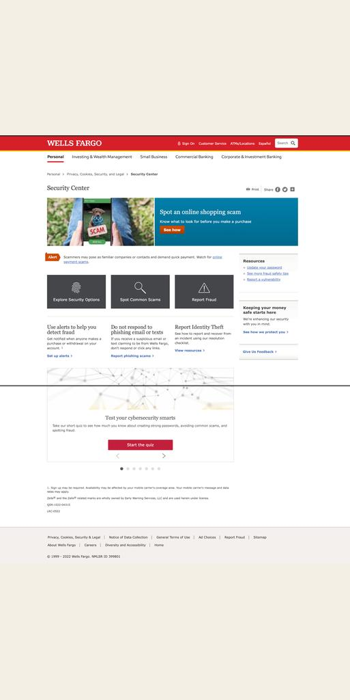
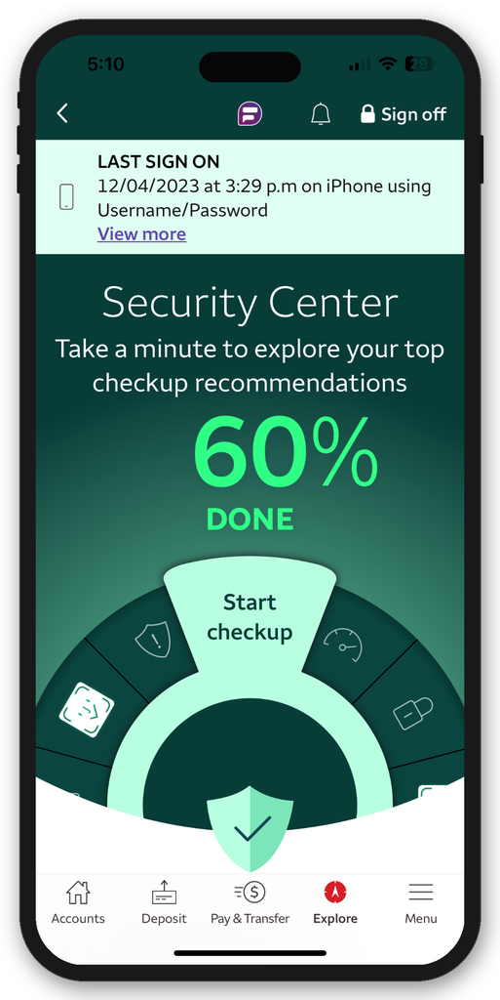
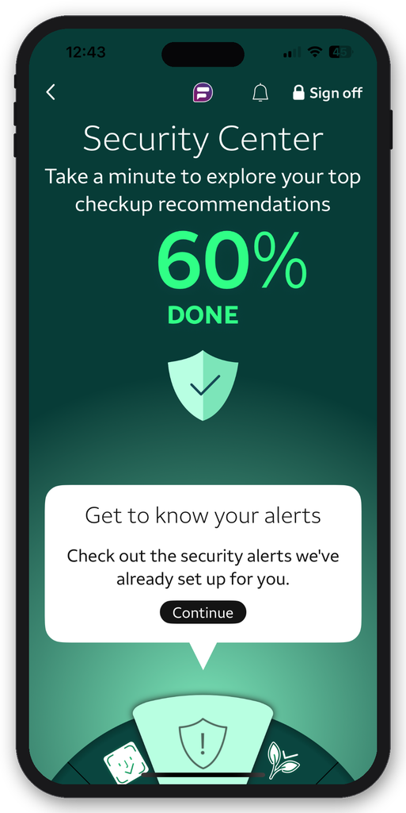
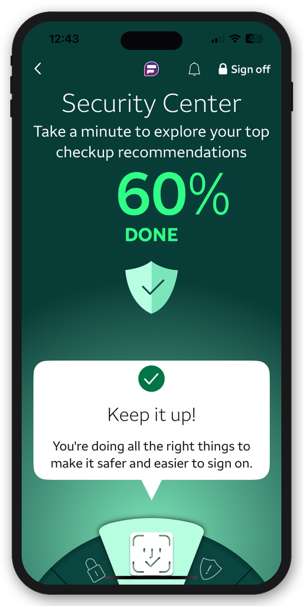
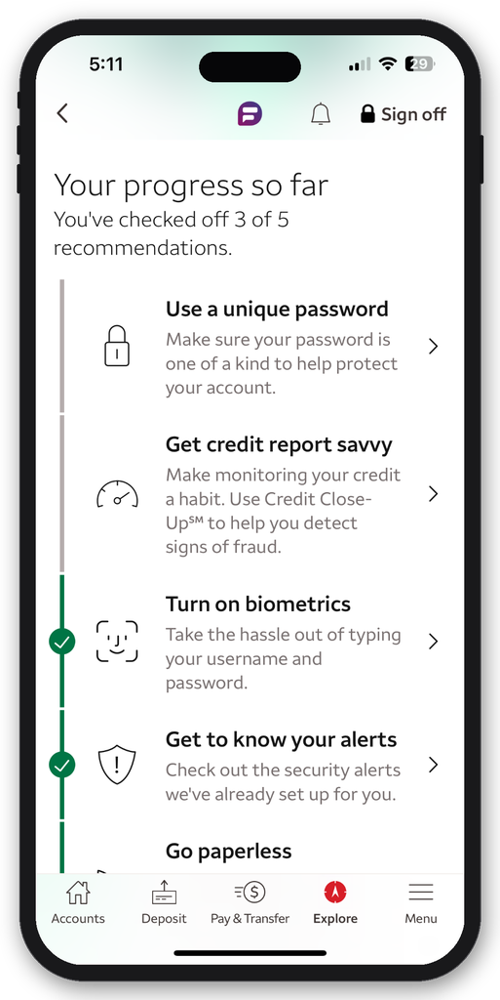

In 2023, my team was tasked with redesigning the Wells Fargo Security Center. The legacy experience was not optimized for mobile and provided little guidance on how customers could take meaningful steps to improve their security.

We saw an opportunity to transform the experience into a more intuitive, guided, and engaging journey—using gamification to motivate customers and make improving their security feel achievable.
Several technical challenges had to be addressed to bring this experience to life. The interface needed to dynamically adapt to each customer based on their current security status. Customers could leave the Security Center to complete a recommended action and return to an updated experience that reflected their progress and clearly guided them to the next step.
The result was a mobile-first, guided security checkup that used gamification to make improving security more engaging. Animation-driven progress, celebratory moments after each completed task, and personalized recommendations helped customers stay motivated while guiding them toward stronger security.




"Wells Fargo's overhaul of Security Center is positioning the bank once again as the industry's best practice."
Javelin Digital Banking Benchmark, 2023
"Scoring 81 points in Privacy & Security earns Wells Fargo top honors. Wells supports numerous customer-facing security elements including set privacy preferences, alerts, and a security strength meter."
Keynote Q4 2023 Mobile Credit Card Scorecard
"Banks must help safeguard customers against fraud, cyber risks, and privacy breaches. Wells Fargo offers comprehensive data management tools in its apps."
Forrester Digital Experience Review — Global Mobile Banking Apps, 2023